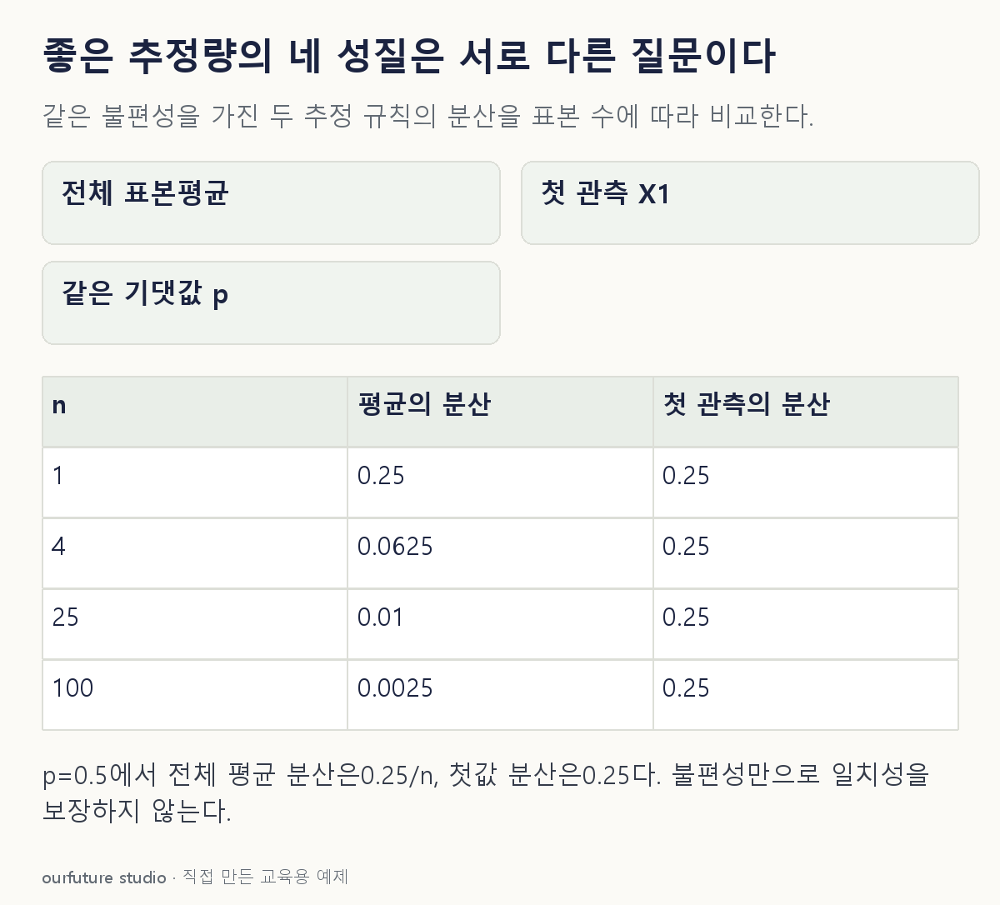

조건을 바꾸며 확인하기
분산이 줄지 않는다는 이유만으로 모든 추정량의 비일치성을 단정하지 않는다. 여기서는 X1의 분포가 n과 무관하고 p=0.5에서 고정 오차 확률이1임도 확인한다.
설명 그림과 비교하기
아래 그림과 표는 고정된 설명 예제입니다. 기본·변형 중 어떤 조건인지 캡션을 읽고, 바꾼 입력의 결과는 계산 칸에서 확인하세요.

같은 문제를 직접 골라 보기
모수 θ의 추정량 T에 대해 모든 θ에서 Eθ(T)=θ가 성립한다.
조건을 더 바꾸면?
n이 커져도 베르누이(p) 자료의 첫 값 X1만 p의 추정량으로 쓴다. 불편하면 반드시 일치할까?
변형 풀이 확인
아니다.
0<p<1에서 X1의 분포가 n과 무관하다. 예를 들어 p=0.5면 |X1−0.5|>0.25일 확률은 언제나 1이라 참값으로 모이지 않는다.
평균이 맞는가, 모이는가, 덜 흔들리는가, 정보를 남기는가.